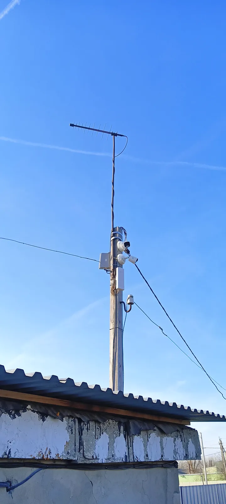

Задача клиента
С чем к нам пришли
Клиент хотел иметь возможность контролировать территорию базы, чтобы обеспечить безопасность и порядок.
Установлено 13 камер для наблюдения за территорией базы. Теперь клиент может следить за событиями онлайн и просматривать архив с телефона.

С чем к нам пришли
Клиент хотел иметь возможность контролировать территорию базы, чтобы обеспечить безопасность и порядок.
Снимки после сдачи работ. Нажмите на фото, чтобы посмотреть крупно.
Полный перечень — что сделали монтажники.
Считаем от задач: по камере на ворота, отдельная — на зону приёмки, на ряды стеллажей и периметр. Точное число — после осмотра, в смете в 3 вариантах.
Да, если камеру над воротами правильно подобрать и поставить: с ИК-подсветкой и под нужным углом.
Рассчитываем архив под вашу задачу — например, чтобы записи хватало до следующей инвентаризации.
3 года на оборудование и 1 год на монтажные работы. Если в гарантийный срок что-то перестало работать — приезжаем и чиним бесплатно.
Оставьте телефон — подберём систему под вашу задачу и пришлём смету в 3 вариантах за 15 минут.